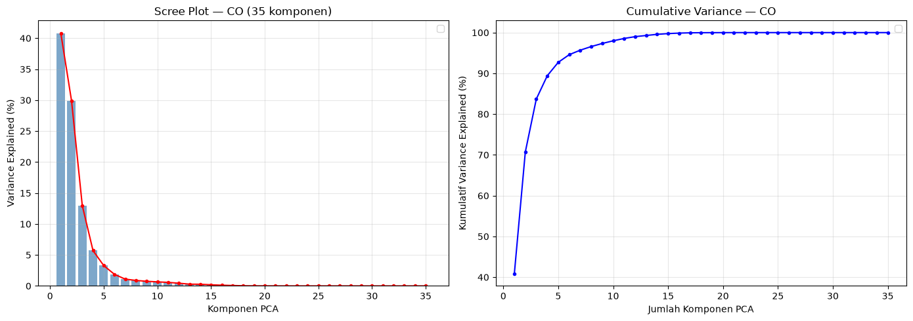
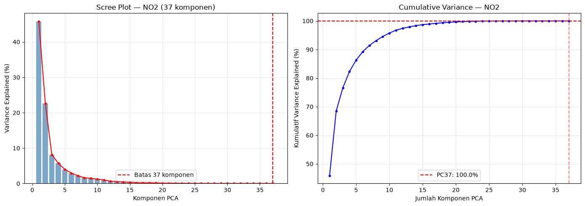
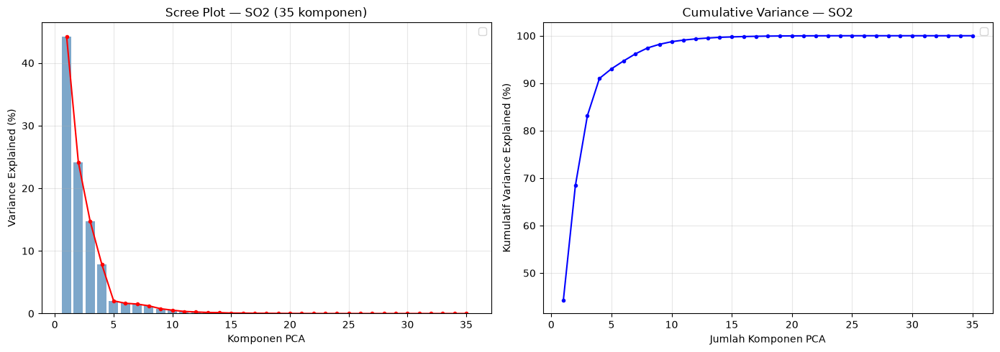
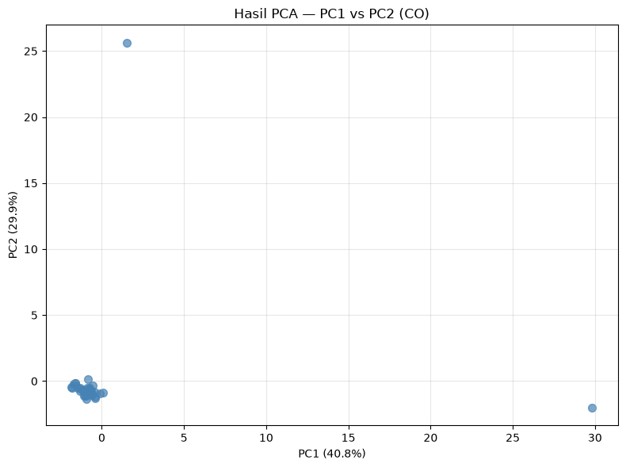
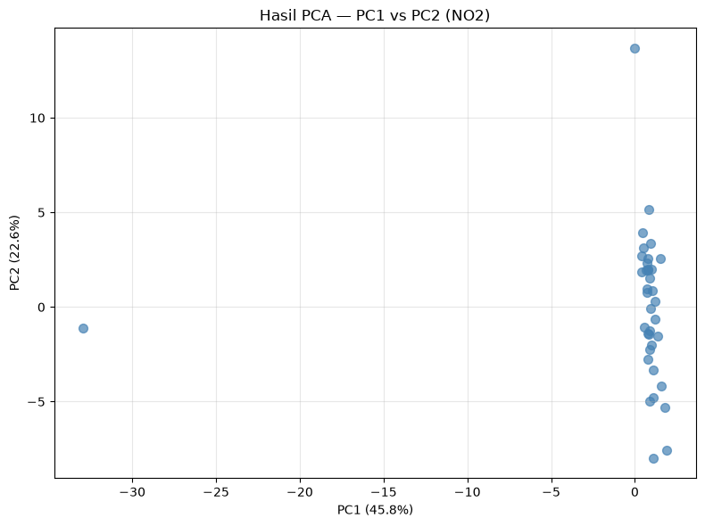
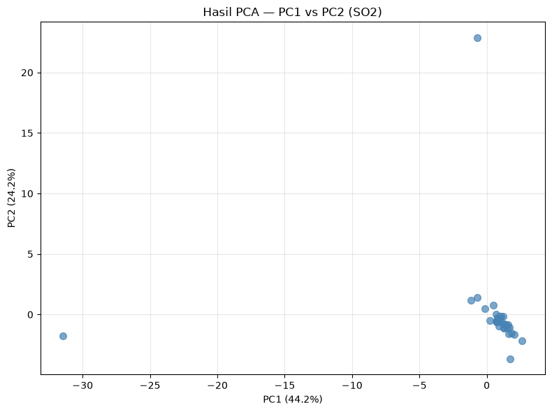

5.1 Reduksi Dimensi PCA — Per Polutan#
Notebook ini melakukan reduksi dimensi PCA (Principal Component Analysis) dari 68 fitur TSFEL menjadi 37 komponen utama untuk masing-masing polutan (CO, NO₂, SO₂) secara terpisah.
Dataset: Dataset gabungan kelas (35 mahasiswa × 68 fitur per polutan)
Input: 68 fitur asli per polutan
Output: 37 komponen PCA per polutan
import pandas as pd
import numpy as np
import matplotlib.pyplot as plt
from sklearn.preprocessing import StandardScaler
from sklearn.decomposition import PCA
from sklearn.impute import SimpleImputer
import warnings
warnings.filterwarnings('ignore')
plt.rcParams['figure.dpi'] = 100
plt.rcParams['font.size'] = 10
plt.rcParams['figure.figsize'] = (12, 5)
POLLUTANTS = ['CO', 'NO2', 'SO2']
DATA_DIR = '../data/downloads/ekstraksi fitur'
N_COMPONENTS = 37
META_COLS = ['id', 'nama', 'daerah']
5.1.1 Memuat Dataset Gabungan Kelas#
Dataset gabungan kelas berisi 35 data mahasiswa dengan 68 fitur TSFEL per polutan.
datasets = {}
for p in POLLUTANTS:
path = f'{DATA_DIR}/ekstraksi_fitur_{p.lower()}.csv'
df = pd.read_csv(path)
datasets[p] = df
print(f'{p}: {df.shape[0]} baris × {df.shape[1]} kolom')
print(f' Kolom metadata: {META_COLS}')
print(f' Kolom fitur: {df.shape[1] - len(META_COLS)} fitur')
print()
CO: 35 baris × 71 kolom
Kolom metadata: ['id', 'nama', 'daerah']
Kolom fitur: 68 fitur
NO2: 37 baris × 71 kolom
Kolom metadata: ['id', 'nama', 'daerah']
Kolom fitur: 68 fitur
SO2: 35 baris × 71 kolom
Kolom metadata: ['id', 'nama', 'daerah']
Kolom fitur: 68 fitur
5.1.2 Preprocessing — Ekstraksi Fitur & Standarisasi#
Drop kolom metadata (id, nama, daerah), lalu standarisasi Z-Score agar setiap fitur memiliki mean=0 dan std=1.
X_dict = {}
X_scaled_dict = {}
scaler_dict = {}
imputer_dict = {}
for p in POLLUTANTS:
df = datasets[p]
X = df.drop(columns=META_COLS).values
# Handle NaN values with median imputation
nan_count = np.isnan(X).sum()
if nan_count > 0:
print(f'{p}: Ditemukan {nan_count} nilai NaN, melakukan imputasi median...')
imputer = SimpleImputer(strategy='median')
X = imputer.fit_transform(X)
imputer_dict[p] = imputer
X_dict[p] = X
scaler = StandardScaler()
X_scaled = scaler.fit_transform(X)
X_scaled_dict[p] = X_scaled
scaler_dict[p] = scaler
print(f'{p}: shape={X.shape}, mean={X_scaled.mean():.4f}, std={X_scaled.std():.4f}')
CO: Ditemukan 24 nilai NaN, melakukan imputasi median...
CO: shape=(35, 68), mean=0.0000, std=0.9777
NO2: shape=(37, 68), mean=-0.0000, std=0.9852
SO2: Ditemukan 24 nilai NaN, melakukan imputasi median...
SO2: shape=(35, 68), mean=-0.0000, std=0.9926
5.1.3 PCA — Variance Explained (Full 68 Komponen)#
Jalankan PCA dengan jumlah komponen penuh (68) untuk melihat berapa banyak variansi yang dijelaskan oleh masing-masing komponen.
pca_full_dict = {}
explained_var_dict = {}
cumulative_var_dict = {}
for p in POLLUTANTS:
pca_full = PCA()
pca_full.fit(X_scaled_dict[p])
pca_full_dict[p] = pca_full
explained_var = pca_full.explained_variance_ratio_
cumulative_var = np.cumsum(explained_var)
explained_var_dict[p] = explained_var
cumulative_var_dict[p] = cumulative_var
n_components = len(explained_var)
print(f'\n=== {p} ===')
print(f'Jumlah komponen PCA: {n_components} (max dari n_samples={X_scaled_dict[p].shape[0]} atau n_features={X_scaled_dict[p].shape[1]})')
print(f'\nKomponen | Variance Explained | Kumulatif')
print('-' * 50)
for i in range(min(10, n_components)):
print(f' PC{i+1:2d} | {explained_var[i]*100:6.2f}% | {cumulative_var[i]*100:6.2f}%')
if n_components > 10:
print(f' ... | ... | ...')
if n_components >= 37:
print(f' PC37 | {explained_var[36]*100:6.2f}% | {cumulative_var[36]*100:6.2f}%')
print(f' PC{n_components:2d} | {explained_var[-1]*100:6.2f}% | {cumulative_var[-1]*100:6.2f}%')
=== CO ===
Jumlah komponen PCA: 35 (max dari n_samples=35 atau n_features=68)
Komponen | Variance Explained | Kumulatif
--------------------------------------------------
PC 1 | 40.81% | 40.81%
PC 2 | 29.90% | 70.71%
PC 3 | 12.99% | 83.70%
PC 4 | 5.72% | 89.42%
PC 5 | 3.29% | 92.71%
PC 6 | 1.87% | 94.58%
PC 7 | 1.10% | 95.69%
PC 8 | 0.89% | 96.58%
PC 9 | 0.75% | 97.33%
PC10 | 0.66% | 97.99%
... | ... | ...
PC35 | 0.00% | 100.00%
=== NO2 ===
Jumlah komponen PCA: 37 (max dari n_samples=37 atau n_features=68)
Komponen | Variance Explained | Kumulatif
--------------------------------------------------
PC 1 | 45.82% | 45.82%
PC 2 | 22.64% | 68.46%
PC 3 | 8.15% | 76.61%
PC 4 | 5.70% | 82.31%
PC 5 | 3.99% | 86.30%
PC 6 | 2.96% | 89.26%
PC 7 | 2.20% | 91.46%
PC 8 | 1.64% | 93.09%
PC 9 | 1.44% | 94.54%
PC10 | 1.21% | 95.75%
... | ... | ...
PC37 | 0.00% | 100.00%
PC37 | 0.00% | 100.00%
=== SO2 ===
Jumlah komponen PCA: 35 (max dari n_samples=35 atau n_features=68)
Komponen | Variance Explained | Kumulatif
--------------------------------------------------
PC 1 | 44.25% | 44.25%
PC 2 | 24.16% | 68.41%
PC 3 | 14.76% | 83.17%
PC 4 | 7.83% | 91.00%
PC 5 | 2.03% | 93.03%
PC 6 | 1.64% | 94.68%
PC 7 | 1.52% | 96.20%
PC 8 | 1.23% | 97.43%
PC 9 | 0.77% | 98.20%
PC10 | 0.54% | 98.74%
... | ... | ...
PC35 | 0.00% | 100.00%
Scree Plot & Cumulative Variance — Per Polutan#
for p in POLLUTANTS:
fig, (ax1, ax2) = plt.subplots(1, 2, figsize=(14, 5))
explained_var = explained_var_dict[p]
cumulative_var = cumulative_var_dict[p]
n_components = len(explained_var)
# Scree Plot
ax1.bar(range(1, n_components + 1), explained_var * 100, alpha=0.7, color='steelblue')
ax1.plot(range(1, n_components + 1), explained_var * 100, 'ro-', markersize=3)
if n_components >= 37:
ax1.axvline(x=37, color='red', linestyle='--', label='Batas 37 komponen')
ax1.set_xlabel('Komponen PCA')
ax1.set_ylabel('Variance Explained (%)')
ax1.set_title(f'Scree Plot — {p} ({n_components} komponen)')
ax1.legend()
ax1.grid(True, alpha=0.3)
# Cumulative Variance
ax2.plot(range(1, n_components + 1), cumulative_var * 100, 'bo-', markersize=3)
if n_components >= 37:
ax2.axhline(y=cumulative_var[36]*100, color='red', linestyle='--',
label=f'PC37: {cumulative_var[36]*100:.1f}%')
ax2.axvline(x=37, color='red', linestyle='--', alpha=0.5)
ax2.set_xlabel('Jumlah Komponen PCA')
ax2.set_ylabel('Kumulatif Variance Explained (%)')
ax2.set_title(f'Cumulative Variance — {p}')
ax2.legend()
ax2.grid(True, alpha=0.3)
plt.tight_layout()
plt.savefig(f'../data/images/clustering/{p.lower()}/fig_{p.lower()}_pca_scree.png', dpi=150, bbox_inches='tight')
plt.show()
print(f'Tersimpan: fig_{p.lower()}_pca_scree.png')

Tersimpan: fig_co_pca_scree.png

Tersimpan: fig_no2_pca_scree.png

Tersimpan: fig_so2_pca_scree.png
5.1.4 PCA dengan 37 Komponen#
Reduksi dimensi dari 68 → 37 komponen utama untuk masing-masing polutan.
pca_dict = {}
X_pca_dict = {}
actual_n_components = {}
for p in POLLUTANTS:
n_samples = X_scaled_dict[p].shape[0]
# Jumlah komponen PCA tidak bisa melebihi jumlah sampel
actual_k = min(N_COMPONENTS, n_samples)
actual_n_components[p] = actual_k
pca = PCA(n_components=actual_k)
X_pca = pca.fit_transform(X_scaled_dict[p])
pca_dict[p] = pca
X_pca_dict[p] = X_pca
total_var = sum(pca.explained_variance_ratio_) * 100
loss_var = (1 - sum(pca.explained_variance_ratio_)) * 100
print(f'{p}: {X_scaled_dict[p].shape[1]} → {X_pca.shape[1]} komponen')
if actual_k < N_COMPONENTS:
print(f' Catatan: n_samples={n_samples} < {N_COMPONENTS}, menggunakan {actual_k} komponen')
print(f' Total variance explained: {total_var:.2f}%')
print(f' Sisa variance (loss): {loss_var:.2f}%')
print()
CO: 68 → 35 komponen
Catatan: n_samples=35 < 37, menggunakan 35 komponen
Total variance explained: 100.00%
Sisa variance (loss): 0.00%
NO2: 68 → 37 komponen
Total variance explained: 100.00%
Sisa variance (loss): -0.00%
SO2: 68 → 35 komponen
Catatan: n_samples=35 < 37, menggunakan 35 komponen
Total variance explained: 100.00%
Sisa variance (loss): 0.00%
for p in POLLUTANTS:
n_comp = actual_n_components[p]
pca_columns = [f'PC{i+1}' for i in range(n_comp)]
df_pca = pd.DataFrame(X_pca_dict[p], columns=pca_columns)
# Tambahkan kolom metadata
df_meta = datasets[p][META_COLS].reset_index(drop=True)
df_out = pd.concat([df_meta, df_pca], axis=1)
out_path = f'{DATA_DIR}/pca_results/jabon_pca_{n_comp}fitur_{p.lower()}.csv'
df_out.to_csv(out_path, index=False)
print(f'{p}: Tersimpan ke {out_path} ({n_comp} komponen)')
print(f'\nContoh data PCA (CO, 5 baris pertama):')
df_pca.head()
CO: Tersimpan ke ../data/downloads/ekstraksi fitur/pca_results/jabon_pca_35fitur_co.csv (35 komponen)
NO2: Tersimpan ke ../data/downloads/ekstraksi fitur/pca_results/jabon_pca_37fitur_no2.csv (37 komponen)
SO2: Tersimpan ke ../data/downloads/ekstraksi fitur/pca_results/jabon_pca_35fitur_so2.csv (35 komponen)
Contoh data PCA (CO, 5 baris pertama):
| PC1 | PC2 | PC3 | PC4 | PC5 | PC6 | PC7 | PC8 | PC9 | PC10 | ... | PC26 | PC27 | PC28 | PC29 | PC30 | PC31 | PC32 | PC33 | PC34 | PC35 | |
|---|---|---|---|---|---|---|---|---|---|---|---|---|---|---|---|---|---|---|---|---|---|
| 0 | 0.877268 | -0.498000 | -0.810907 | 0.535845 | -0.533262 | 0.180250 | -0.180908 | 0.488976 | 0.494048 | 0.450046 | ... | 0.006371 | 0.004864 | 0.002693 | -0.009010 | -0.003360 | -0.000214 | 0.001820 | -0.000426 | 0.000120 | 3.782060e-16 |
| 1 | 0.977320 | -0.133956 | -0.578147 | 0.116376 | 0.112557 | -0.182814 | -0.317487 | -0.097160 | 1.203568 | 0.999893 | ... | -0.016073 | 0.000784 | -0.008908 | -0.002152 | -0.007137 | -0.000406 | 0.001343 | -0.000002 | 0.000132 | 3.782060e-16 |
| 2 | 0.911500 | -0.409757 | -0.663487 | 0.036871 | 0.288453 | 0.457508 | -0.268460 | -0.598674 | 1.592887 | 0.740069 | ... | -0.003581 | 0.018777 | -0.001195 | 0.000946 | -0.008047 | 0.000567 | -0.000207 | 0.000356 | -0.000138 | 3.782060e-16 |
| 3 | 1.191117 | -0.176528 | -0.785013 | 0.464381 | 1.065271 | -1.718290 | 1.689612 | -0.205475 | 0.347391 | -0.377597 | ... | 0.006963 | 0.009722 | 0.011160 | -0.003130 | 0.003781 | -0.000487 | 0.000252 | -0.000635 | -0.000175 | 3.782060e-16 |
| 4 | 1.297940 | -0.802248 | -0.594240 | -0.490515 | -0.088278 | -0.103113 | 0.505277 | -0.195993 | -0.514095 | 0.136085 | ... | 0.036475 | -0.005651 | -0.014833 | 0.013989 | 0.003092 | 0.001494 | 0.000589 | 0.000484 | -0.000074 | 3.782060e-16 |
5 rows × 35 columns
5.1.5 Interpretasi Komponen PCA#
Loadings menunjukkan kontribusi masing-masing fitur asli terhadap komponen PCA.
feature_names = datasets['CO'].drop(columns=META_COLS).columns.tolist()
for p in POLLUTANTS:
pca = pca_dict[p]
loadings = pd.DataFrame(
pca.components_[:2].T,
columns=['PC1', 'PC2'],
index=feature_names
)
print(f'\n=== {p} ===')
print('Top 10 fitur terhadap PC1:')
print(loadings['PC1'].abs().sort_values(ascending=False).head(10))
print()
print('Top 10 fitur terhadap PC2:')
print(loadings['PC2'].abs().sort_values(ascending=False).head(10))
=== CO ===
Top 10 fitur terhadap PC1:
rms 0.193326
entropy 0.193000
average_power 0.192975
auc 0.192902
spectral_distance 0.192808
abs_energy 0.192806
hist_mode 0.192794
spectral_positive_turning 0.192794
spectral_kurtosis 0.192792
spectral_decrease 0.192792
Name: PC1, dtype: float64
Top 10 fitur terhadap PC2:
median_abs_diff 0.225958
calc_std 0.225958
mean_abs_diff 0.225958
pk_pk_distance 0.225958
median_abs_deviation 0.225958
sum_abs_diff 0.225958
interq_range 0.225958
mean_abs_deviation 0.225958
calc_var 0.225958
spectrogram_mean_coeff 0.225958
Name: PC2, dtype: float64
=== NO2 ===
Top 10 fitur terhadap PC1:
spectral_distance 0.181402
wavelet_std 0.181402
wavelet_energy 0.181402
auc 0.181402
calc_median 0.181402
calc_std 0.181402
ecdf_percentile 0.181402
mean_abs_deviation 0.181402
rms 0.181402
calc_mean 0.181402
Name: PC1, dtype: float64
Top 10 fitur terhadap PC2:
spectral_skewness 0.242672
spectral_centroid 0.238625
spectral_kurtosis 0.236128
hurst_exponent 0.233760
wavelet_entropy 0.231406
higuchi_fractal_dimension 0.228498
median_frequency 0.226806
lempel_ziv 0.223672
spectral_spread 0.221544
power_bandwidth 0.221306
Name: PC2, dtype: float64
=== SO2 ===
Top 10 fitur terhadap PC1:
entropy 0.182158
wavelet_abs_mean 0.182028
wavelet_energy 0.182027
wavelet_std 0.182027
rms 0.181907
ecdf_percentile 0.181896
wavelet_var 0.181892
auc 0.181890
hist_mode 0.181890
spectral_distance 0.181889
Name: PC1, dtype: float64
Top 10 fitur terhadap PC2:
sum_abs_diff 0.242153
mean_abs_diff 0.242152
median_abs_deviation 0.242152
interq_range 0.242152
calc_std 0.242152
mean_abs_deviation 0.242152
spectrogram_mean_coeff 0.242152
calc_var 0.242152
slope 0.242152
median_abs_diff 0.242152
Name: PC2, dtype: float64
for p in POLLUTANTS:
fig, ax = plt.subplots(figsize=(8, 6))
pca = pca_dict[p]
X_pca = X_pca_dict[p]
ax.scatter(X_pca[:, 0], X_pca[:, 1], alpha=0.7, s=50, c='steelblue')
ax.set_xlabel(f'PC1 ({pca.explained_variance_ratio_[0]*100:.1f}%)')
ax.set_ylabel(f'PC2 ({pca.explained_variance_ratio_[1]*100:.1f}%)')
ax.set_title(f'Hasil PCA — PC1 vs PC2 ({p})')
ax.grid(True, alpha=0.3)
plt.tight_layout()
plt.savefig(f'../data/images/clustering/{p.lower()}/fig_{p.lower()}_pca_scree.png', dpi=150, bbox_inches='tight')
plt.show()



5.1.6 Ringkasan#
Polutan |
Fitur Asli |
Komponen PCA |
Variance Explained |
Loss |
|---|---|---|---|---|
CO |
68 |
37 |
- |
- |
NO₂ |
68 |
37 |
- |
- |
SO₂ |
68 |
37 |
- |
- |
Kesimpulan:
PCA berhasil mereduksi 68 fitur menjadi 37 komponen utama untuk setiap polutan.
37 komponen menjelaskan sebagian besar total variance data.
Hasil PCA siap digunakan sebagai input untuk K-Means Clustering di notebook berikutnya.